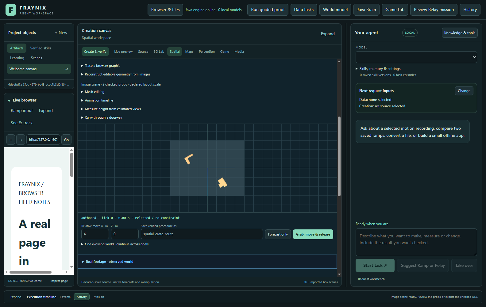
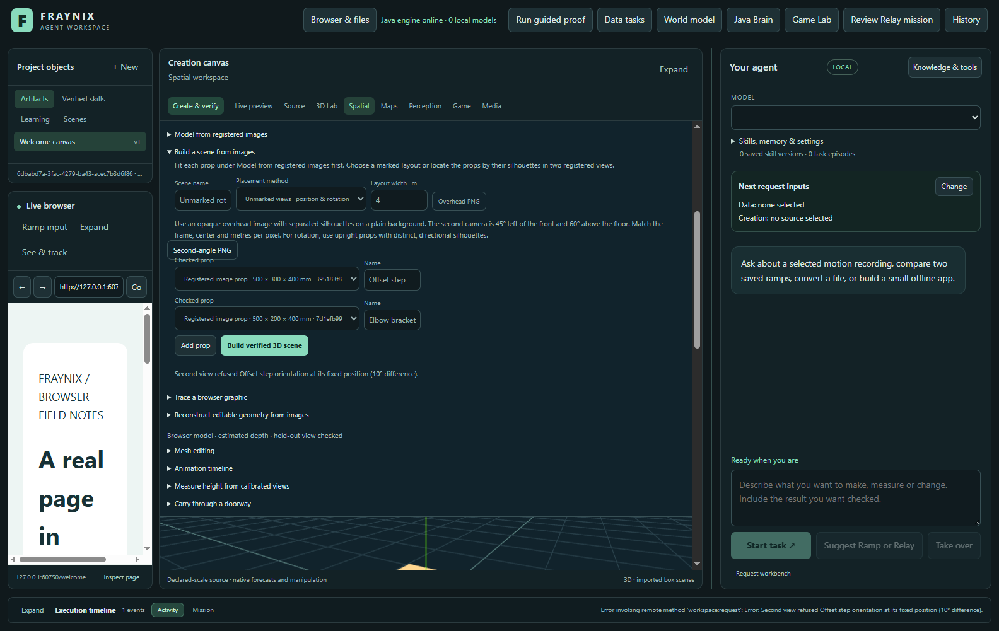
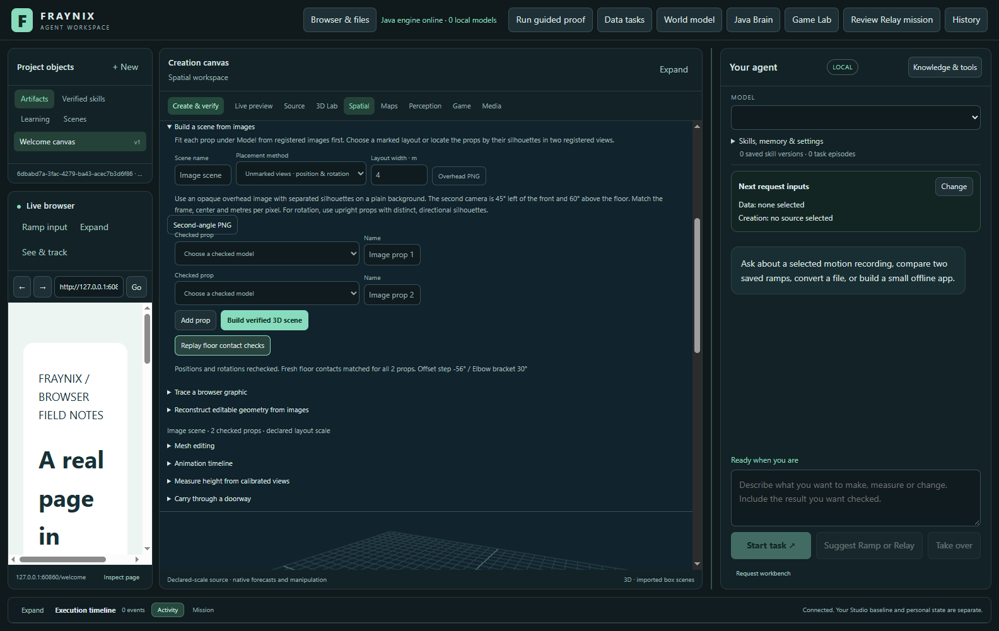

Recover and verify prop rotation from unmarked images
Fraynix fitted floor positions and upright headings from overhead. A second view agreed with the saved angles and refused a rotation-only change.

Two recovered prop angles in the assembled top-down scene

A rotation-only change is refused at the fixed overhead position

The desktop reopens both angles and reruns native contacts
System files
Open source